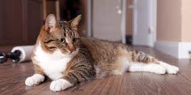

El gato doméstico, llamado más comunmente gato, y de forma coloquial minino, michi, mizo y algunos nombres más, es un mamífero carnívoro de la familia Felidae. Es una subespecie domesticada, por la convivencia con el ser humano, del gato montés. El nombre actual en muchas lenguas proviene del latín vulgar catus
